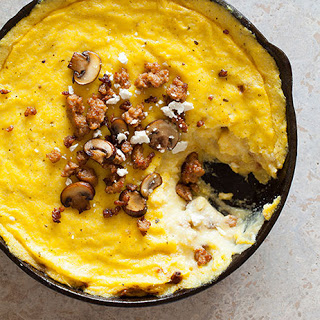

A basic polenta, made more flavorful with some simple herbs. Delicious with vegetables, sauce, or cheese.
Bring the water and milk to just a boil.
Whisk in the cornmeal and herbs, being sure to break up any lumps!
Reduce heat to just a simmer, and cook for about 35 to 40 minutes, stirring frequently. You want to end up with something about the consistency of sour cream.
Stir in salt and black pepper to taste! Serve with your favorite sauce.
